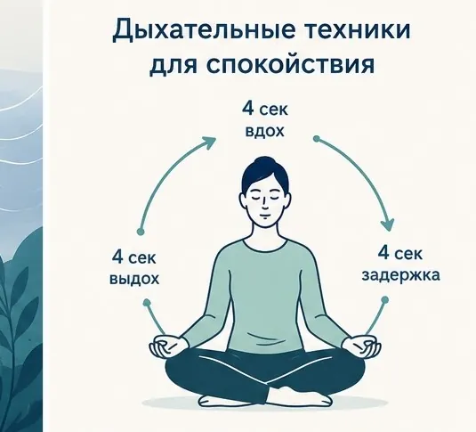
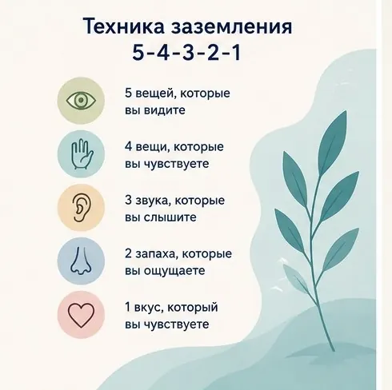
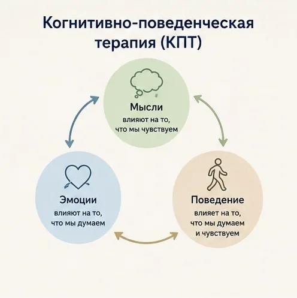
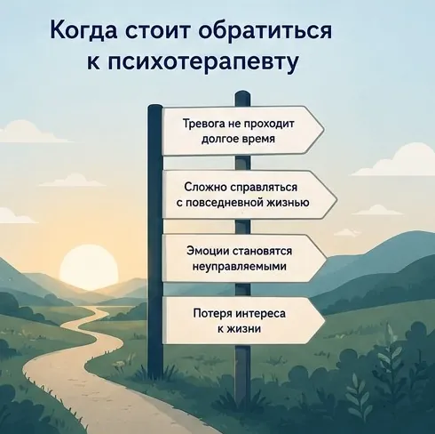

Главная → Блог → Как справиться с тревогой
Как справиться с тревогой: 8 техник, которые реально помогают
Обновлено: 26.06.2026 · 9 минут чтения
Тревога знакома каждому: перед важным разговором, в неопределённости, когда «что-то идёт не так». Это нормальная реакция психики. Но когда тревога накатывает часто, без явной причины и мешает жить — с ней нужно и можно работать. Хорошая новость: сильную тревогу можно заметно уменьшить здесь и сейчас с помощью нескольких простых техник самопомощи.
Что такое тревога и почему она возникает
Тревога — это встроенная «система сигнализации» организма. Когда мозг улавливает возможную угрозу, он запускает реакцию «бей или беги»: учащается сердцебиение, напрягаются мышцы, обостряется внимание. В реальной опасности это помогает. Проблема в том, что эта же система срабатывает и на воображаемые угрозы — мысли о будущем, неопределённость, «а вдруг что-то случится».
Тревогу усиливают вполне бытовые вещи: недосып, кофеин, хронический стресс, переутомление, информационная перегрузка. Поэтому часто первый шаг — не «перестать думать», а снизить эту фоновую нагрузку на нервную систему.
Как понять, что тревога стала проблемой
Эпизодическая тревога — это норма. Но стоит присмотреться к себе, если совпадает несколько пунктов:
- тревога возникает часто и без явной причины;
- есть телесные симптомы: напряжение, бессонница, ком в горле, учащённое сердцебиение;
- вы начинаете избегать ситуаций, мест или людей «на всякий случай»;
- мысли крутятся по кругу, и их трудно остановить;
- тревога мешает работать, отдыхать и общаться.
Если это про вас — техники ниже помогут снизить остроту, а в устойчивых случаях стоит обратиться к специалисту (об этом — в конце).
8 техник самопомощи
Эти приёмы можно применять прямо в момент тревоги. Не обязательно все сразу — выберите два-три, которые откликаются.
1. Дыхание 4-7-8
Медленный выдох успокаивает нервную систему. Вдохните через нос на счёт 4, задержите дыхание на 7, медленно выдохните через рот на 8. Повторите 4–5 циклов. Главное — чтобы выдох был длиннее вдоха.
Если 4-7-8 непривычно, попробуйте квадратное дыхание: вдох, задержка и выдох — по 4 секунды каждый.

2. Заземление 5-4-3-2-1
Когда тревога уносит в мысли о будущем, эта техника возвращает в настоящее через органы чувств. Назовите про себя: 5 вещей, которые видите, 4 — которые слышите, 3 — которые можете потрогать, 2 запаха и 1 вкус.

3. Проверьте тревожную мысль (приём из КПТ)
Тревога часто питается мыслями вида «случится худшее». Когнитивно-поведенческая терапия (КПТ) предлагает не верить им на слово, а проверять фактами. Идея КПТ проста: наши мысли, эмоции и поведение связаны, и, меняя мысли, мы влияем на самочувствие.

Задайте себе три вопроса:
- Какие есть доказательства, что это произойдёт? А что — против?
- Что я сказал бы другу, который тревожится о том же?
- Если худшее случится — смогу ли я как-то справиться?
4. Назовите эмоцию словами
Простое называние чувства («сейчас я тревожусь и немного злюсь») снижает его интенсивность. Расплывчатое «мне плохо» держит в напряжении, а точное название даёт ощущение контроля.
5. Снимите телесное напряжение
Тревога живёт в теле — зажатые плечи, сжатая челюсть, поверхностное дыхание. Пройдитесь вниманием по телу сверху вниз и расслабьте каждую зону. Или напрягите мышцы на 5 секунд и резко отпустите — контраст помогает «сбросить» напряжение.
6. Ограничьте «тревожный скроллинг»
Бесконечная лента новостей подпитывает фоновую тревогу. Правило: проверять новости в конкретное время и не дольше 10–15 минут.
7. Выпишите тревоги на бумагу
В голове тревоги кажутся огромными. Выпишите их списком и отметьте, на что вы можете повлиять, а на что нет. С первым составьте маленький план, второе — отпустите.
8. Проговорите это вслух
Иногда самое важное — не остаться с тревогой один на один. Разговор помогает сформулировать мысли и почувствовать, что вы не одни. Если рядом нет человека, с которым хочется поделиться именно сейчас, можно проговорить это с ИИ-психологом — анонимно и в любое время.
Хотите попробовать прямо сейчас? Поговорите с ИИ-психологом — тепло, анонимно, без осуждения и записи.
Начать разговор бесплатноКакие ошибки усиливают тревогу
Иногда мы неосознанно подкармливаем тревогу. Вот частые ловушки:
- Избегание. Обходя пугающие ситуации, вы получаете короткое облегчение, но в долгую тревога только растёт.
- Борьба с мыслями. Попытка «не думать» о тревоге усиливает её. Лучше признать и мягко переключиться.
- Кофеин и недосып. Оба напрямую усиливают тревожность — это легко недооценить.
- Руминация «а что если». Бесконечное прокручивание сценариев создаёт ощущение угрозы там, где её нет.
- Алкоголь «чтобы расслабиться». Даёт краткий эффект, но на следующий день тревога обычно сильнее.
Когда обратиться к специалисту
Техники самопомощи хорошо работают с обычной тревогой. Но есть сигналы, при которых важна помощь врача или психотерапевта:

- тревога держится неделями и мешает работать, спать, общаться;
- случаются панические атаки с сильными телесными симптомами;
- появляются мысли о том, что не хочется жить.
Тревожные расстройства хорошо поддаются психотерапии (особенно КПТ), и с ними можно справиться.
Частые вопросы
Можно ли избавиться от тревоги навсегда?
Полностью убрать тревогу нельзя — это нормальная и нужная реакция психики, которая защищает нас. Цель не в том, чтобы никогда не тревожиться, а в том, чтобы тревога не была чрезмерной и не мешала жить. Этого вполне можно достичь техниками самопомощи, а при необходимости — с психотерапевтом.
Почему тревога усиливается вечером?
Вечером спадает дневная нагрузка и отвлечений становится меньше, поэтому тревожные мысли «всплывают». Добавляются усталость, снижение уровня глюкозы, кофеин, выпитый днём, и привычка прокручивать события перед сном. Помогают вечерний ритуал без экранов, дыхательные техники и выписывание тревог на бумагу.
Чем тревога отличается от панической атаки?
Тревога — это более длительное фоновое напряжение и беспокойство. Паническая атака — это короткий резкий приступ сильного страха с яркими телесными симптомами (сердцебиение, нехватка воздуха), который достигает пика за несколько минут и проходит. Это не опасно для жизни, но переживается очень интенсивно.
Помогают ли дыхательные техники всем?
Дыхательные техники помогают большинству людей снизить остроту тревоги, потому что напрямую влияют на нервную систему через длинный выдох. Но они не лечат причину и подходят не каждому одинаково. Если тревога сильная и постоянная, дыхания недостаточно — нужна работа с психотерапевтом.
Материал подготовлен командой AI Therapist и основан на доказательных подходах к работе с тревогой — когнитивно-поведенческой терапии (КПТ), ACT и практиках осознанности (Mindfulness). Статья носит просветительский характер и не заменяет консультацию специалиста.
Источник: Всемирная организация здравоохранения — тревожные расстройства.